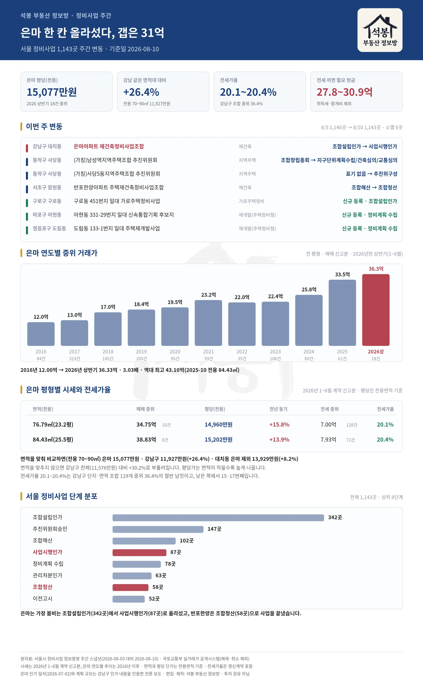

서울 정비사업장 1,143곳을 매주 들여다보고 있습니다. 이번 주에는 4곳의 단계가 바뀌고 3곳이 새로 올라왔습니다. 그중 눈에 띄는 것은 은마입니다. 조합설립인가에 머물러 있던 표시가 사업시행인가로 넘어갔습니다. 1979년에 지은 이 아파트는 2026년 상반기 평당 15,077만원에 거래됐고, 전세를 끼고 사려 해도 현금이 27.8억에서 30.9억 듭니다.
이번 주에 움직인 일곱 곳
서울시 정비사업 정보몽땅에 올라온 사업장을 매주 같은 요일에 받아 앞주와 맞대 봅니다. 8월 3일 1,140곳이 8월 10일 1,143곳이 됐습니다. 사라진 사업장은 0곳입니다.
위치
사업장
유형
변동
강남구 대치동
은마아파트 재건축정비사업조합
재건축
조합설립인가 → 사업시행인가
동작구 사당동
(가칭)남성역지역주택조합 추진위원회
지역주택
조합창립총회 → 지구단위계획수립/건축심의/교통심의
동작구 사당동
(가칭)사당5동지역주택조합 추진위원회
지역주택
표기 없음 → 추진위구성
서초구 잠원동
반포한양아파트 주택재건축정비사업조합
재건축
조합해산 → 조합청산
구로구 구로동
구로동 451번지 일대 가로주택정비사업
가로주택정비
신규 등록 · 조합설립인가
마포구 아현동
아현동 331-29번지 일대 신속통합기획 후보지
재개발(주택정비형)
신규 등록 · 정비계획 수립
영등포구 도림동
도림동 133-1번지 일대 주택재개발사업
재개발(주택정비형)
신규 등록 · 정비계획 수립

여기서부터는 회원에게 보여드립니다
카카오 로그인 3초면 전문을 읽을 수 있습니다. 무료입니다.
가입하시면 지역 시장조사 보고서(약식)를 2회 무료로 요청하실 수 있습니다.
이미 회원이면 같은 버튼으로 로그인만 됩니다
은마, 신청 41일 만에 사업시행인가
먼저 날짜를 정확히 해 둡니다. 우리 데이터베이스에 이번 주 반영됐을 뿐, 강남구가 은마아파트 재건축 사업시행계획을 인가한 것은 7월 2일입니다. 조합이 5월 22일에 신청했으니 41일 걸렸습니다. 법정 처리기한이 60일이니 그보다 이르게 나왔습니다.
인가받은 계획은 지하 6층에서 지상 49층, 29개 동, 5,850가구입니다. 대지면적은 243,552.6㎡, 평으로 바꾸면 약 73,675평입니다. 조합은 8월까지 감정평가를 마치고 조합원 분양신청을 받은 뒤 2028년 착공을 목표로 하고 있습니다.
이 단계가 어느 정도 위치인지 감이 잘 안 오실 수 있습니다. 서울 정비사업장 1,143곳 가운데 주요 단계만 추려 세어 보면 이렇습니다.
가장 많은 것이 조합설립인가 342곳입니다. 은마는 여기 묶여 있다가 87곳뿐인 칸으로 올라갔습니다. 다만 사업시행인가는 중간 지점입니다. 관리처분인가를 받고 이주와 철거를 거쳐야 착공에 이릅니다. 조합이 잡은 2028년까지 2년 남짓 남았습니다.
47년 된 아파트가 강남 중위보다 26.4% 비쌉니다
은마의 2026년 상반기 매매는 18건, 중위 거래가 36.33억입니다. 전용면적으로 환산한 평당가는 15,077만원. 같은 기간 강남구 아파트 전체의 평당 중위가 11,576만원이니 은마가 30.2% 높습니다.
다만 이 비교는 그대로 믿으면 안 됩니다. 평당가는 면적이 작을수록 높게 나오는데, 은마에는 전용 76.79, 84.43㎡ 두 종류뿐이고 강남구 전체에는 대형이 섞여 있기 때문입니다. 그래서 은마 두 평형을 감싸는 전용 70~90㎡로 범위를 맞춰 다시 계산했습니다.
비교 대상
평당(전용)
표본
은마 대비
은마
15,077만원
18건
기준
강남구 전체 아파트
11,576만원
1,577건
+30.2%
강남구 70~90㎡
11,927만원
436건
+26.4%
대치동 전체 아파트
12,807만원
192건
+17.7%
대치동 70~90㎡
14,559만원
74건
+3.6%
대치동 70~90㎡ (은마 제외)
13,929만원
56건
+8.2%
같은 면적대 강남구와 견주면 26.4% 높습니다. 그런데 대치동 안에서 견주면 8.2% 차이에 그칩니다. 은마가 유별나게 비싼 것이 아니라 대치동 자체가 비싼 동네라고 읽는 편이 정확합니다.
면적을 맞추지 않으면 이 차이가 부풀려집니다. 대치동 전체와 견주면 17.7%, 강남구 전체와 견주면 30.2%가 나옵니다. 대치동에 은마보다 큰 평형이 많고, 큰 평형일수록 평당가가 낮게 잡히기 때문입니다.
그래도 1979년에 지은 건물입니다. 47년이 지났습니다. 이 값을 만드는 것은 건물이 아니라 그 자리와 앞으로 지어질 것입니다.
계약연도
매매
중위 거래가
2020년
95건
19.50억
2021년
59건
23.20억
2022년
35건
22.00억
2023년
106건
22.38억
2024년
60건
25.82억
2025년
61건
33.50억
2026년 상반기
18건
36.33억
2016년 중위 12.00억에서 10년 만에 3.03배가 됐습니다. 역대 최고가는 2025년 10월 전용 84.43㎡(25.5평)의 43.10억입니다.
평형별로 나눠 보면 이렇습니다.
면적
2026 상반기
중위 거래가
평당(전용)
전년 동기 대비
전용 76.79㎡(23.2평)
10건
34.75억
14,960만원
+15.8%
전용 84.43㎡(25.5평)
8건
38.83억
15,202만원
+13.9%
전세를 끼고 사려면 30.9억
같은 기간 은마의 전세 보증금 중위를 뽑아 매매 중위로 나눠 봤습니다. 전세가율은 전세 중위 보증금을 매매 중위가로 나눈 값입니다.
면적
매매 중위
전세 중위
전세가율
필요 현금
전용 76.79㎡(23.2평)
34.75억 (10건)
7.00억 (128건)
20.1%
27.8억
전용 84.43㎡(25.5평)
38.83억 (8건)
7.93억 (72건)
20.4%
30.9억
전세가율 20.1에서 20.4%입니다. 지금 이 집에 사는 값이 매매가의 5분의 1이라는 뜻입니다. 매매 쪽 표본이 10건과 8건으로 적으니 소수점까지 믿을 값은 아니지만, 방향은 분명합니다.
강남구 전체와 견주면 얼마나 낮은 것인지 보이실 겁니다. 강남구에서 매매와 전세 표본이 각각 3건 이상 잡힌 단지·면적 조합 119개의 전세가율 중위는 36.4%입니다. 은마 두 평형은 낮은 쪽에서 각각 15번째와 17번째입니다.
은마보다 전세가율이 낮은 열넷도 대부분 재건축을 앞둔 단지였습니다. 압구정동 현대·신현대·한양 계열이 열둘, 개포주공7단지, 도곡 개포한신입니다. 압구정동에는 특별계획구역 1구역부터 5구역까지 재건축 사업장 여섯 곳이 등록돼 있고, 개포주공6·7단지는 사업시행인가, 도곡 개포한신은 관리처분인가 단계입니다. 재건축을 기다리는 단지에서 전세가율이 낮게 나오는 흐름이 강남 안에서도 일관됩니다.
전세가율이 낮다는 것은 값이 싸다는 뜻이 아닙니다. 전세를 끼고 들어가도 27.8억에서 30.9억의 현금이 필요합니다. 취득세와 중개비는 여기 들어 있지 않으니 실제로는 더 듭니다. 그리고 이주가 시작되면 세입자에게 돌려줄 전세금까지 마련해야 합니다.
지난주에 다룬 노원 미미삼도 모양이 같았습니다. 그쪽은 전세가율이 26에서 27% 사이였고 필요 현금이 6억대였습니다. 방향은 같고 자릿수가 다릅니다.
반대편 끝, 반포한양은 문을 닫았습니다
같은 주에 정반대 지점에서도 움직임이 있었습니다. 서초구 잠원동 반포한양아파트 재건축조합이 조합해산에서 조합청산으로 넘어갔습니다. 사업이 완전히 끝났다는 표시입니다.
이 조합이 지은 것이 신반포자이입니다. 2016년 1월에 일반분양 153가구를 모집했고 2018년에 준공했습니다. 우리 실거래 이력에 반포한양이라는 이름의 거래가 한 건도 남아 있지 않은 것이 그 때문입니다. 이미 헐리고 새 이름으로 바뀐 뒤였습니다.
신반포자이의 2026년 상반기 매매는 6건, 중위 39.35억입니다. 표본이 적은 데다 소형 위주라 단지 전체 시세로 읽기는 어렵습니다. 역대 최고가는 2025년 7월 전용 114.94㎡(34.8평)의 56.50억으로, 평형이 달라 앞의 값과 직접 견줄 수는 없습니다.
은마가 이제 사업시행인가를 받았고 반포한양은 청산으로 끝났습니다. 조합 설립부터 청산까지가 하나의 사업이라면, 서울에서 청산까지 마친 곳은 58곳입니다. 조합설립인가와 추진위원회승인에 몰려 있는 489곳과 견주면 얼마 되지 않습니다.
새로 올라온 다섯 곳과 그 동네 시세
나머지 다섯 곳은 아직 초기 단계라 계획 수치가 공개되지 않았습니다. 대신 그 동네가 지금 어느 수준인지를 정리했습니다. 평당가는 모두 전용면적 기준입니다.
위치
사업장
아파트 평당 2026년 1~6월
연립·다세대 평당 2026년 6~8월
자치구 평당
동작 사당동
(가칭)남성역지역주택조합 (가칭)사당5동지역주택조합 각각 지구단위계획·심의 진입, 추진위구성 표기 시작
6,275만원 390건
4,719만원 73건
아파트 5,933만원 연립·다세대 3,872만원
구로 구로동
구로동 451번지 일대 가로주택 조합설립인가로 신규 등록
3,270만원 832건
2,229만원 27건
아파트 3,384만원 연립·다세대 2,092만원
마포 아현동
아현동 331-29 신속통합기획 후보지 정비계획 수립으로 신규 등록
9,725만원 115건
5,209만원 8건표본 적음
아파트 6,017만원 연립·다세대 3,617만원
영등포 도림동
도림동 133-1 일대 재개발 정비계획 수립으로 신규 등록
4,279만원 33건
5,939만원 8건표본 적음
아파트 5,544만원 연립·다세대 3,655만원
아파트는 2026년 1~6월 계약 신고분이고, 연립·다세대는 우리가 굴리는 최근 6개월 통합본에서 뽑아 2026년 6~8월 신고분입니다. 두 열의 기간이 다르니 나란히 놓고 비교하지는 마십시오.
아현동이 눈에 띕니다. 아파트 평당 9,725만원으로 마포구 중위 6,017만원보다 높습니다. 상반기 거래가 가장 많았던 더클래시(2022년)는 31건에 중위 20.98억, 평당 11,521만원이었습니다. 여기에 신속통합기획 후보지가 하나 더 붙었습니다.
사당동에서는 지역주택조합 두 곳이 같은 주에 움직였습니다. 하나는 지구단위계획과 심의 단계로 들어갔고, 다른 하나는 추진위구성으로 처음 표기됐습니다. 이 동네에서 상반기 거래가 가장 많았던 사당롯데캐슬골든포레(2021년)는 35건에 중위 15.50억, 평당 8,100만원입니다.
지역주택조합은 재개발·재건축과 다릅니다. 도시정비법이 아니라 주택법을 따르는 사업이고, 조합이 토지를 직접 사 모아야 합니다. 토지 확보가 늦어지면 사업이 길게 멈추거나 무산되기도 합니다. 사당5동 조합의 추진위구성은 서울 전체에서 2곳뿐인 가장 이른 표기입니다. 초기 단계라는 표시일 뿐 진행 속도를 말해 주지는 않습니다.
도림동 연립·다세대 평당 5,939만원은 거래 8건에서 나온 값입니다. 서울 전체 연립·다세대 평당 중위 2,859만원의 두 배가 넘는데, 이 정도 표본이면 몇 건이 값을 끌어올렸을 가능성이 큽니다. 아현동도 8건이라 사정이 같습니다. 참고로만 보시는 게 좋겠습니다.
정리하면
이번 주 서울 정비사업 변동은 일곱 건이었고, 무게는 은마 하나에 쏠려 있습니다. 7월 2일 사업시행인가를 받았고 2028년 착공을 목표로 하고 있습니다. 다음 관문은 관리처분인가입니다.
값은 이미 올라 있습니다. 평당 15,077만원, 같은 면적대 강남구 중위보다 26.4% 높고 10년 전의 3.03배입니다. 다만 대치동 안에서 견주면 8.2% 차이라, 은마 혼자 튄다기보다 동네 전체가 그 수준이라고 보는 편이 맞습니다.
전세가율은 20.1에서 20.4%로, 강남구 조합 중위 36.4%의 절반을 조금 넘습니다. 전세를 끼고 들어가도 27.8억 넘는 현금이 필요하고 이주가 시작되면 더 듭니다. 사업시행인가는 절반쯤 온 지점입니다. 반포한양이 청산까지 가는 데 걸린 시간을 생각하면 남은 구간이 얼마나 될지는 아직 알 수 없습니다.
원자료: 서울시 정비사업 정보몽땅 주간 스냅샷(2026-08-03 대비 2026-08-10) · 국토교통부 실거래가 공개시스템(해제·취소 제외) · 아파트 시세와 전세가율은 2026년 1~6월 계약 신고분, 은마 연도별 추이는 2016년 이후 각 연도 전체(2026년만 상반기), 연립·다세대는 2026년 6~8월 계약 신고분 · 기준일 2026-08-10 · 면적과 평당 단가는 전용면적 기준이고 모든 대표값은 중위(가운데 값)입니다 · 전세가율은 같은 기간 순수 전세의 중위 보증금을 매매 중위가로 나눈 값으로 갱신계약을 포함하며, 필요 현금에 취득세·중개비는 넣지 않았습니다 · 강남구 비교군은 매매와 전세가 각각 3건 이상인 단지·면적 조합 119개 · 은마 인가 일자와 계획 규모(5,850가구·지상 49층·대지 243,552.6㎡·2028년 착공 목표)는 강남구 인가 내용을 인용한 언론 보도 · 반포한양 재건축이 신반포자이인 것은 2016년 일반분양 보도로 확인 · 편집·제작: 석봉 부동산 정보방 · 본 자료는 정보 제공 목적이며 투자 권유가 아닙니다.